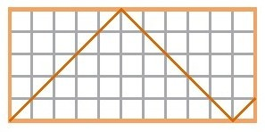
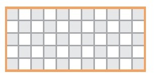
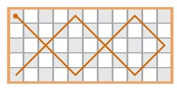
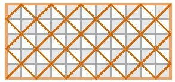
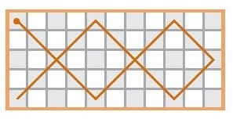
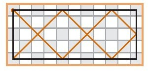

——基思·德富林（全国公共广播电台《数学人》）
我解题的方法可以描述为：
1.不用担心，只管尝试
2.如果可行，那太好了，直接到第3步。如果不行，重复第1步。
3.好吧，现在需要有所担心了。你一定出错了。找出自己的错误。
简而言之，我要告诉你的是把它搞砸。对大部分人来说，这似乎是错误的。听起来像是数学测试中一个糟糕的办法，也像是为宴请10个人准备菜肴的最坏方式。但是事实是，自动自发地出错是取得各类进步的关键。
在厨房中搞得一团糟
厨师不会出错。他们会引导试验继续进行下去。要说的错误是一个态度上的问题。不要改变你的步调，转换你的态度。
即使一次失败的试验也会告诉我们一些有价值的东西。我用了5年时间去试验得出了伪汉堡的制作方法。我用了20年时间不断尝试创造出自己的比萨食谱（经过10年的尝试我没有告诉你们我的方法是什么，因为又一个10年后，我知道了一个我更喜欢的方法）。
至于比萨，我想我能给予你强有力的试错支持。做比萨并不简单。我从未见过哪个比萨食谱标榜“十分简单”。你可以仔细研究比萨，但是没有什么毫无遗漏的语言文字供你学习。你必须亲自行动，先弄得一团糟。
在尝试做比萨的时候，我有时会用食谱，而烤出来的比萨和我（或者烹饪书作者）想要的不一样。但是每次我都增进了对生面团、配料、烤箱温度的了解，还会一点点摸索出家人的饮食喜好。我学得很慢，但是我学到了。
目前，我正在主导意大利饺、千层饼、烟熏排骨和锅贴的试验。
不做饭的人常常觉得烹饪技能是与生俱来的。他们对自己说“我不知道这里要做什么。如果我有成为厨师的天赋，我就会知道。所以烹饪我做不来”。
错！这需要时间。每个人都需要时间。投入时间（可能要很多时间），然后你就会成功的。
数学上一团糟
当我开始研究无线索数独（见第三章）时，我对这样的谜题是否成立毫无概念。但是我没有等待灵光乍现那一刻，而是立即行动，尝试着出了一道谜题。我一次又一次地失败，但是我从每一次失败中都能学到一点东西。
当我开始研究矩形中的反弹点时，我完全困惑不解。但是我和矩形一起游戏，尝试着看到一种模式。我是因为这样一种反弹而困惑不解。

我看着矩形将它想象成棋盘。

我这样跳：

而不是这样：

棋盘上的弹跳

与在一个稍小矩形中弹跳的情形一样。

我变得更困惑了。在我意识到下一步怎么走前已经过了好几天。我是在浪费自己的时间吗？
完全没有！我当时不能告诉你，而现在我也不能告诉你我学到的到底是什么。我必须投入时间。
非数学家们常常觉得做数学题的能力是与生俱来的。他们对自己说“我不知道这一步该怎么做，如果我有数学天赋我就会知道了。我不知道，所以我离数学远远的”。
错！这需要时间。每个人都需要时间。投入时间（可能要很多时间），然后你就会成功的。
莫扎特怎样引起麻烦的
约瑟芬·索尔曼的《莫扎特风格》[36]中有一段关于莫扎特的精彩轶事。面对前来讨教交响曲作曲技巧的一位年轻人，莫扎特回答说交响曲很复杂，建议从更简单的开始。
“但是莫扎特先生，”那个年轻的家伙说，“你在比我还年轻的时候就已经写出交响曲了！”
莫扎特回应说：“我从不问别人怎么写。”
莫扎特和这位年轻人之间的差别不在于知识，而是勇气。莫扎特不惧怕行动，也不怕陷入困境。这位年轻人行事小心谨慎，因为他缺乏必要的勇气。莫扎特断言他必须从更简单的曲子开始。
一团糟的事情说得够多了。我们一起来谈谈美。